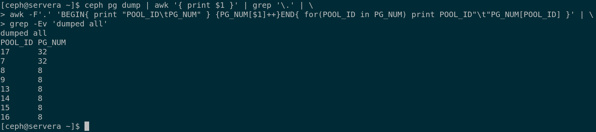

第一章 提高命令行生产率

目标：
- 通过使用Bash shell的高级功能、shell脚本以及RHEL所提供的各种实用程序，
可以更⾼效地运行命令。
章节：
- 编写简单的Bash脚本
- 使用循环更高效地运行命令
- 使用正则表达式匹配命令输出中的文本
第一节：编写简单的Bash脚本
目标：
- 完成本节后，学生应该能通过编写简单的shell脚本来自动执行相应的命令序列。
创建和执行Bash shell脚本：
- 复杂的任务则通常需要将多个命令链接到一起并在它们之间传递结果。
- 借助Bash shell环境和脚本功能，可将Linux命令和shell脚本组合在一起，从而轻松地解决
重复而困难的实际问题。
- 精通shell脚本编写是进行系统管理的必备要素。
- 脚本可以提高处理日常任务的效率和准确性。
- 高级编辑器（如vim或emacs）理解Bash shell语法并且提供语法高亮，有助于识别常见错误。
- 脚本的第一行以符号 '#!' 开头，通常称为 sh-bang 或 she-bang。
- shell脚本必须为可执行文件。
- 使用chmod命令可添加执行权限。
- 可将脚本放在shell的 PATH 环境变量中列出的目录中，即可直接输入脚本名来运行。

对特殊字符加引号：
- 一些字符和词语对Bash shell具有特殊含义。
- 有时希望使用这些字符的字面值，而非其特殊含义。
- 以下三种工具之一可以取消（或转义）特殊含义：
1. 反斜杠（\）
2. 单引号（''）
3. 双引号（""）

从Shell脚本提供输出：
- 通过将文本作为参数传递给命令，echo命令可显示任意文本。
- 默认情况下，文本将在标准输出（STDOUT）上显示。

- 也可以使用输出重定向将其定向到标准错误（STDERR）。

练习 P6：WRITING SIMPLE BASH SCRIPTS
第二节：使用循环更高效地运行命令
目标：
- 完成本节后，学生应该能：
- 使用for循环迭代列表
- 通过命令和脚本评估退出代码
- 使用运算符执行测试
- 使用if语句创建条件结构
使用循环来迭代命令：
- 系统管理员在其日常活动中经常会遇到重复任务。
- for循环是Bash提供的循环结构。
- Bash的for循环结构使用以下语法：


* Shell脚本示例：
1. for语句中的"\"转义与双引号圈引

2. IFS（内部字段分隔符）使用要点


3. case语句示例

4. awk命令简单数值统计示例

在脚本中使用退出代码：
- 在处理完所有内容后，脚本会退出到调用它的进程。
- 但是，有时候可能需要在完成之前退出脚本，比如在遇到错误条件时。
- 可在脚本中使用 exit 命令来实现这一目的。
- 可使用整数参数（0 ~ 255 之间，表示退出代码）来执行exit命令。
- 退出代码是进程完成后返回的代码。
- 0 表示没有错误，非零值都表示存在错误。
- 可以使用不同的非零值来区分遇到的不同类型错误。
- 此退出代码传回到父进程，存储在 ? 变量中，并可通过 $? 进行访问。

测试脚本输入：
- 可通过 test 命令对脚本进行语法测试。

- 可以使用Bash的测试语法 [ <TESTEXPRESSION> ] 来执行测试：
1. Bash数字比较运算符：

2. 字符串比较运算符：

3. Bash的字符串一元运算符：

条件判断结构：
- if/then结构：
1. Bash中最简单的条件结构是 if/then 结构，其语法如下：

2. 如果满足给定条件，将采取一个或多个操作。
3. 如果不满足给定条件，则不采取任何操作。

- if/then/else结构：
1. if/then结构可以进一步扩展，以便能够根据是否满足条件来采取不同的操作集合。


- if/then/elif/then/else结构：
1. if/then/else结构可以进一步扩展以测试多个条件，在满足某个条件时执行不同的
操作集合。

2. 在此条件结构中，Bash将按照显示的顺序测试条件。
3. 在发现某个条件成立后，Bash将执行和该条件相关联的操作，然后跳过条件结构的
其余部分。
4. 如果所有条件均不成立，Bash将执行 else 子句中的操作。

* 示例：
1. if/then语句基本使用


2. Bash中bc支持浮点数运算

练习 P15：RUNNING COMMANDS MORE EFFICIENTLY USING LOOPS
第三节：使用正则表达式匹配命令输出中的文本
目标：
- 完成本节后，学生应该能使用grep和正则表达式在日志和命令输出中进行模式匹配。
正则表达式：regular expression
- 正则表达式使用模式匹配机制查找特定内容。
- vim、grep 和 less 命令都可以使用正则表达式。
- Perl、Python 和 C 等编程语言在使用模式匹配条件时，也都会使用正则表达式。
- 正则表达式自成体系，该语言有其自身的语法和规则。
描述正则表达式：
- 最简单的正则是行中完全匹配。
$ grep cat /usr/share/dict/words
- ^ ：开头匹配
- $ ：末尾匹配
$ grep ^cat abc.txt; grep dog$ abc.txt
- ^cat$：匹配只有cat的行
- c.t：匹配含有cat、c5t、cQt这样内容的行
- c[aou]t：只匹配cat、cot、cut
- c.*t：匹配cat、ct、coat、culvert等以c开头，t结尾的内容（不要写成c*t）。
- c.\{2\}t：匹配c开头，t结尾，中间正好2个字符的内容，如coat。
$ grep 'c.\{2\}t' /usr/share/dict/words
- $ man 7 regex：查看正则表达式的使用方法
* 注意：
1. 本课程介绍了两种不同的元字符文本解析系统：
a. shell模式匹配（也称为文件通配或文件名扩展）
b. 正则表达式
2. 由于这两个系统都使用相似的元字符，如星号（*），但在元字符解释和规则方面存在
差异，因此在完全掌握每种系统之前，两者之间可能会存在混淆。
3. 模式匹配是一项命令行解析技术，它可以轻松指定多个文件名，并且主要支持在命令行
上表示文件名的模式。
4. 正则表达式则设计为用文本字符串来表示任何形式或模式，无论内容有多么复杂。
5. 在内部，正则表达式受到大量文本处理命令（如grep、sed、awk、python、perl）和
诸多应用程序的支持，在解释规则上存在与命令有关的细微差异。


通过GREP匹配正则表达式：
- grep命令后跟一个正则表达式和一个文件。

- 由于正则表达式常含有shell元字符（如 $、* 和 {}），建议使用单引号括起正则表达式。
- 通过竖线运算符（|），grep命令可与其他命令一起使用。

- grep选项：


- grep命令使用示例：


练习 P25：MATCHING TEXT IN COMMAND OUTPUT WITH REGULAR EXPRESSIONS
Lab P28：IMPROVING COMMAND-LINE PRODUCTIVITY